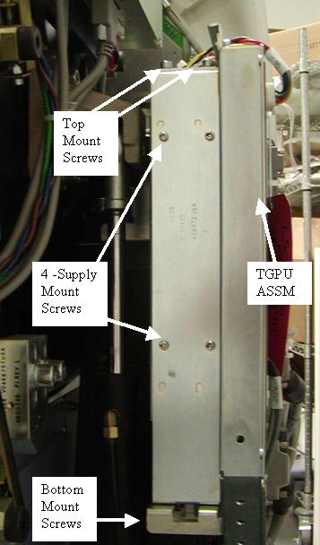
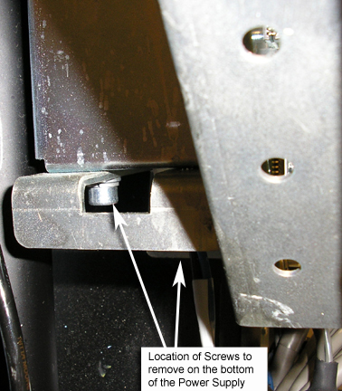
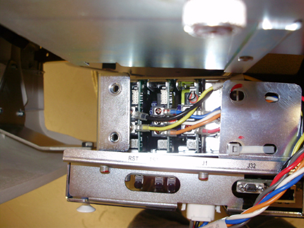
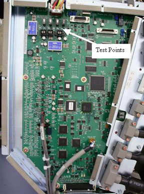
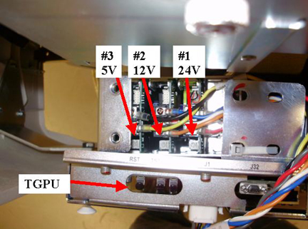

Operating Documentation
Direction 5193574-800, Rev# 22
LightSpeed 7.X Service Methods
Module Version 4.0, Version Date 8/25/14
Operating Documentation |
| Required Persons | Preliminary Reqs | Procedure | Finalization |
|---|---|---|---|
| 1 | Not Applicable | 60 mins | 45 mins |
This procedure defines the steps necessary to replace the TGPU power supply behind the TGPU board assembly.
| Item | Qty | Effectivity | Part# | Manufacturer | |
|---|---|---|---|---|---|
| FE Toolkit | 1 | - | - | - | |
| 3 mm and 5 mm hex wrenches | 1 | - | - | - | |
| Thin screw driver for power supply adjustment | 1 | - | - | - | |
| Fluke 87 (or equivalent) | 1 | - | - | - | |
| Lockout/Tagout Kit | 1 | - | - | - | |
| Rear Cover Dollies | 1 pr | - | - | - | |
| Item | Qty | Effectivity | Part# | Manufacturer | |
|---|---|---|---|---|---|
| TGPU Power Supply | 1 | - | 5111429-2 | - | |
| ||||
| Shock Hazard | ||||
| Voltage Present | ||||
| No service on left side while energized. |
| ||||
| Follow ALL required safety and PPE procedures customary for your organization, when working on this product. | ||||
| Condition | Reference | Effectivity |
|---|---|---|
Only trained service personnel should service the GE CT Scanner. | - | - |
Remove gantry right side cover.
Refer to Parts Replacement → Gantry → Enclosure → (Cover Removal Procedures).
Turn OFF the Axial Drive, HVDC and 120 VAC switches on the gantry’s Service Switch Panel.
Remove the gantry left side cover, top covers and rear cover.
| NOTE: | Top covers are heavy, pay attention to procedure and cautions in the top cover removal procedure. |
Power down the console and Lockout/Tagout for gantry power.
The power supply is located behind the TGPU assembly (Illustration 1.)
Illustration 1: TGPU Power Supply Location

Disconnect the power lead to J1 on the TGPU (top side of the supply) and a power lead connected to the power supply on the bottom.
Remove the 4 screws (5 mm hex wrench) that hold the power supply and panel in place. There are 2 screws on top labeled “Top Mount Screws” see Illustration 1 and 2 screws on the bottom, see Illustration 2.
Illustration 2: Power Supply Screw Locations

Remove the sheet metal panel with the defective power supply.
Remove the 4 screws (3 mm hex wrench) holding the power supply to the mounting panel.
Install the new power supply on the sheet metal panel using the 4 screws removed from the old power supply.
Reconnect the power lead to TGPU J1 and the power lead on the bottom of the power supply.
Position the power supply and bracket in the gantry behind the TGPU but leave it out enough to access the power supply adjustment screws. Reference Illustration 3
Illustration 3: Power Supply adjustment position

Remove the LOTO applied to the system and restore power to the system.
Turn ON the gantry 120 VAC service switch, press the e-stop reset button on the lower right of the service switch panel and power up the console.
Check and Adjust the TGPU power supply voltages as follows. Reference Illustration 4 for test point location and Illustration 5 for adjustment screw location.
Using a voltmeter check the voltage between TP16 and TP17 on the TGPU. Adjust screw #1 to have 24V +/- 0.2V.
Using a voltmeter check the voltage between TP19 and TP22 on the TGPU. Adjust screw #3 to be between 5.0V to 5.1V.
Using a voltmeter check the voltage between TP26 and TP29 on the TGPU. Adjust screw #2 to have 12V +/- 0.2V.
Illustration 4: TPGU Test Point location

Illustration 5: Adjustment screws (Top of supply)

Turn off the gantry 120 VAC service switch.
Position the new power supply and sheet metal panel into the brackets behind the TPGU and install the 2 mounting screws (5 mm hex wrench) on the top and 2 mounting screws on the bottom. Tighten all screws.
Install the gantry rear cover, top covers and left side cover.
Refer to Parts Replacement → Gantry → Enclosure → (Cover Procedures).
Enable 120 VAC HVDC and Axial Drive service switches from the service switch panel. Press the table drives enable button on the lower right corner of the service switch panel.
Install the gantry right side cover.
Perform a [System Scanning Test] from the [Functional Checks] menu of the service manual to ensure system operation.